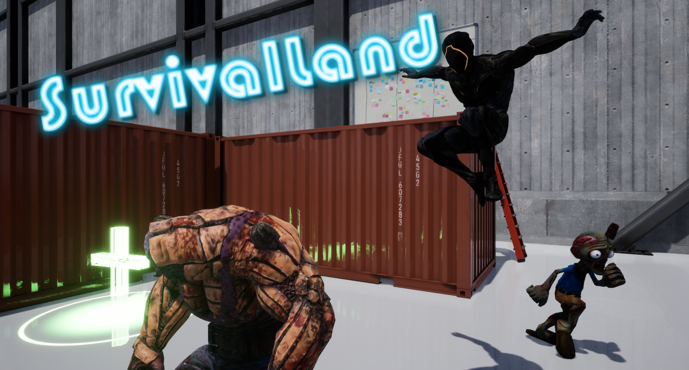
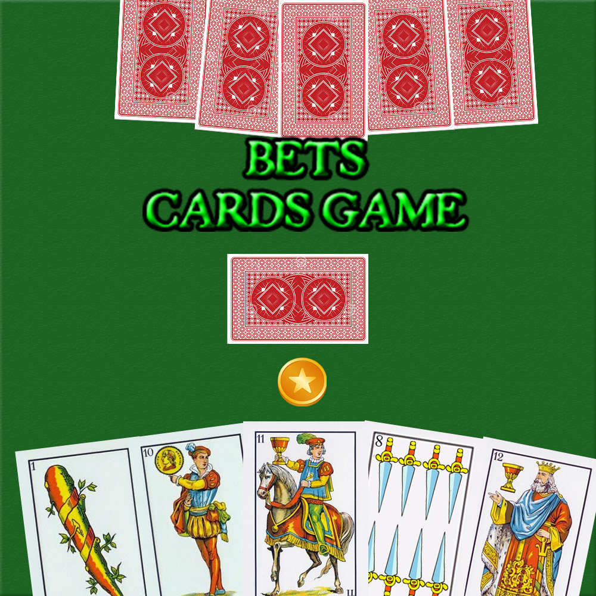

Since I started learning programming, I have participated in different game projects which had been uploaded to Itch.io. Some of them, I made them alone but, however, I have created others in groups.

SurvivalLand
SurvivalLand is a 3D-Platformer game in which you have to run and hide from the enemies around the maps. You will have power ups and special platforms to help you for fleeing in special moments. Be careful because there are two types of enemies, one of them is the Brute, the standard one, but the other is the Informer, which runs away from you to warn other brutes where you are.
I made this game alone, taking from the Internet the 3D assets, developing the gameplay of the game and designing all the levels. This game was developed in Unreal Engine 4 with C++.

Whispers
Whispers is a scary adventure set in the witch-hunting days when not long ago the last member of your family, your older sister, was burned at the stake for witchcraft.You are certain she was sentenced unjustly, as the only warlock in your family is you.For that reason, you had to run away from your village to the forest nearby and now you are completely alone, except for the whispers: they have always been with you. You didn’t use to pay much attention to them, but now they´ve become more insistent, calling and telling you they’re your only chance of survival.
I made this game with a team project of more than 20 people from the Master’s Degree for the PlayStation Talents. This game was made on Unreal Engine 4. The gameplay of this game is about events and I made most of them plus a game manager which sets the correct state of each event. Moreover, I was responsible for the character movement, the AI behaviors and the settings menu functionality.
Link of the Demo Reel video

Daedalus Stargazer
This game was made on Unreal Engine with C++ for the GlobalGameJam2021. This game is about to obtain a number of items making dash to the rhythm of the music.
I participated in this Game Jam with a team and I was responsible for making the movement of the player and the game functionality.

Fujiori
This game was made on Unreal Engine with C++ for the EpicMegaJam2020. It is about to climb down a mountain avoiding obstacles and the difficulty of the game changes to the rythm of the music.
In this Game Jam, I have also participated with a team and I was the gameplay programmer. I made the character movement of one of the game modes, the lose and win mechanisms and the powerups effects.

Bets Cards Game
Bets Cards Game is an online game cards with the spanish cards in which you will have to guess correctly in the number of bets you made to win the game.
I made this game alone in Unity and the online part was made with Photon Engine to carry through connections between clients. All the main mecanisms is made on the same class which is called in the differents clients to change turn and update data.

Trading Paradise
Trading Paradise is a puzzle game in which you have to trade items to reach a goal item. This game was made on Unity with C# and it has two game modes, an one player mode and a two players mode.
I made this game alone, including the art part, the design of the game and the programming part. The game logic of this game always provide, at least, a way to reach the goal and, depending of the difficulty, the number of trades that you have to make changes.

Sweet Alliance
This game was made for the Global StartupCities GameJam on Unity with C#. Sweet Alliance is a local multiplayer cooperative game where you have to protect your base from the enemies. However, it will not be easy because each player controls the movement of their character and the gunshot of the other.
I made this game with a team and I was responsible for the enemies spawn, the lose condition and some powerups effects.

Switch On
This game was developed for the Futuristic Jam 2020 on Unity with C#. Switch On is a game where will have to restore your sight and get out of the place without being seen by the enemies.
This was the first Game Jam which I had participated and I did it with a team. I was responsible for the enemies' behaviour, the streaming levels and the mechanism of the doors.

War bot
War bot is a game to create a war between the players (max 30 names) and this game was created to recreate the famous Twitter bots that were created in 2018 which did the same thing.
I made this game alone on Unity with C# and it was made for PC and Android mobiles. This game has an interesting logic game. If a player defeates a lot of players, they will have more possibilities to win the next fight, but they are not invincibles.

The hunting of the bones
This was my first game and I made it for a subject in my degree of Computer Engineering on Unity with C#. I made the whole game alone, including the 3D models and animations. In this game, your purpose is to take all the bones around the house without being seen by the cats. The behaviour of the cats (the enemies) are simple and some objects around the map change depending of the number of bones that you have.